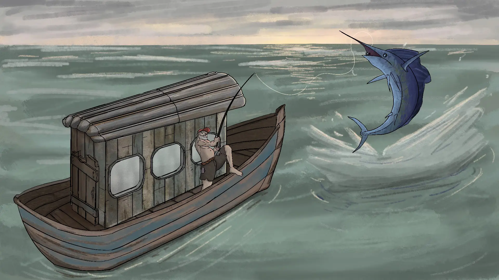
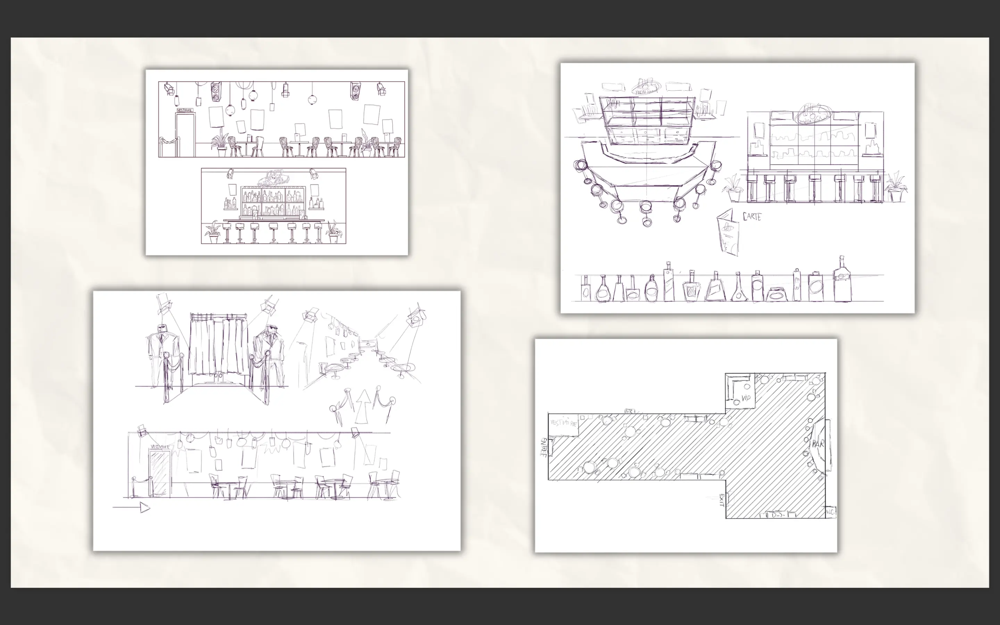
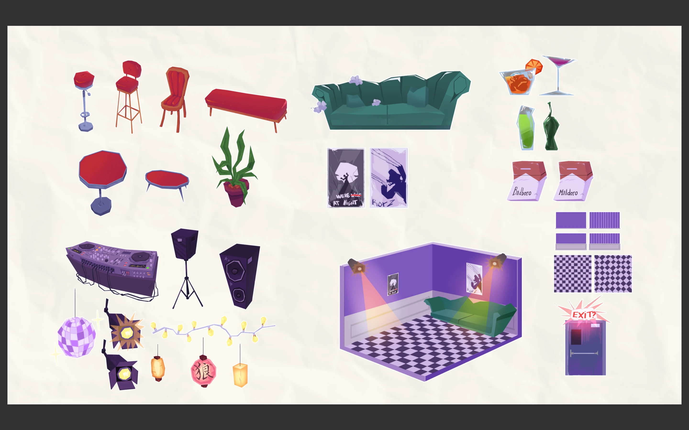
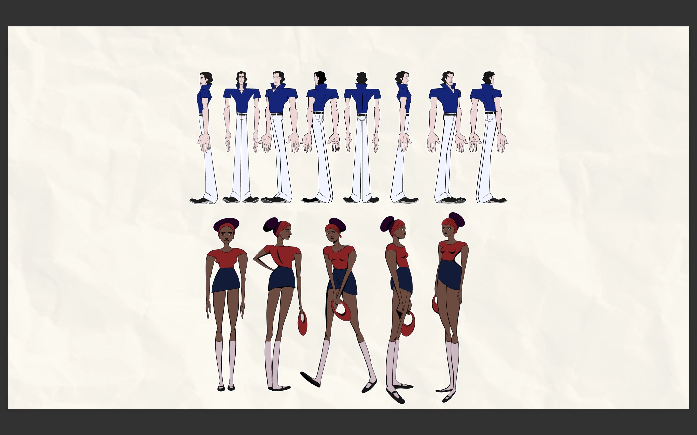
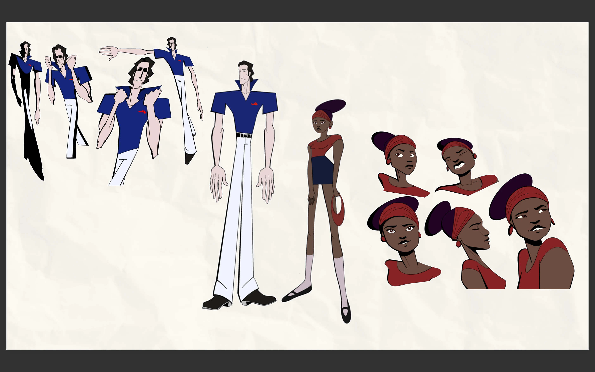
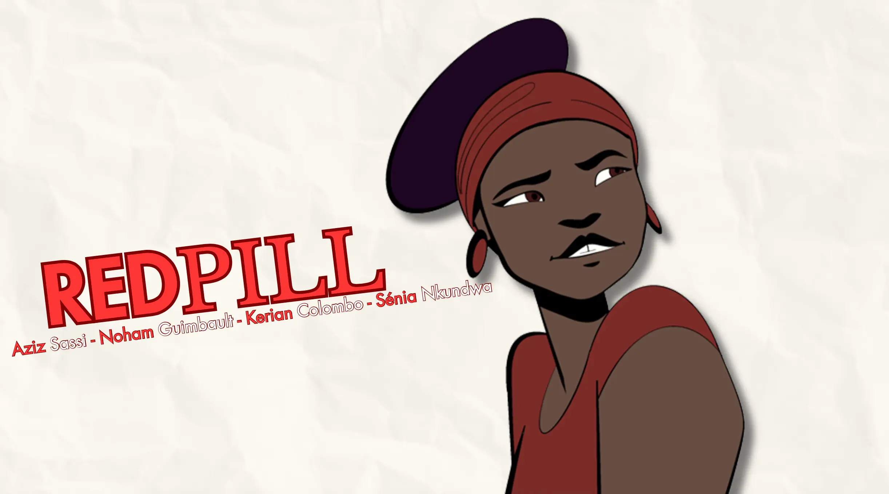

Noham Guimbault est étudiant à l'ECV, l'École de Création Visuelle, où il se forme à l'animation.
Jeune artiste, il imagine, crée et anime ses propres idées. Pour lui, un dessin n'est jamais fini tant qu'il n'a pas bougé.
Ses personnages, aux couleurs vives et aux traits expressifs, donnent vie à des sujets qui l'inspirent et le touchent. Nourri par le cinéma d'animation, il raconte des histoires simples qui touchent par leur sincérité.

Noham raconte sa vision du monde et son imaginaire créatif avec sincérité et émotions. Il aborde, avec son angle propre,le sujet des relations humaines. L'animation est un moyen pour lui de dénoncer des faits de société qu'il condamne.
Son style : des couleurs vives, des traits expressifs, des personnages qui portent l'émotion.



Derrière chaque séquence, il y a des dizaines d'étapes. Noham vous les montre :
Les planches de recherche : les premiers traits, les essais de personnages.
Les images clés : les moments forts qui structurent l'histoire.
Les projets en cours : des œuvres en mouvement, qui évoluent encore.

Red Pill est un projet collaboratif réalisé avec Aziz Sassi, Kerian Colombo, Sénia Nkundwa.
Noham y a réalisé les storyboards, backgrounds, characters design, montage audio et vidéo, clean up et les intervalles.
Fiche de l'œuvre
Titre : Red Pill
Année : 2026
Format : 2 minutes 21
Statut : Terminé
Noham expose pour la première fois à Dedal des Couleurs. Pour acquérir une œuvre, découvrir un projet ou imaginer une collaboration, contactez la galerie.
Nous contacter